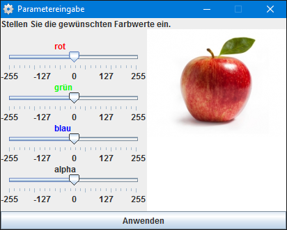

Die Filter sind eine Gruppe unterschiedlicher Effekte die sich
auf ein Bild in „Bildbetrachter“ anwenden lassen.
Die verschiedenen Filter lassen sich auswählen, wenn eine Datei
geöffnet ist und man in der Menüzeile auf „Filter“ klickt.
(Hinweis: Ist keine Bilddatei geöffnet lässt sich der Menüpunkt nicht anklicken.)
Farbfilter
Als Farbfilter werden etwa Vorsatzfilter für Kameras bezeichnet,
die nur eine bestimmte Farbe (Strahlung bestimmter Wellenlänge)
passieren lassen. Sie werden meistens aus eingefärbtem Glas,
Kunststoff oder Gelatinefolien hergestellt.
Der Begriff wird auch für Software zur Bildbearbeitung verwendet,
die das Farbspektrum verändern und so den Kontrast erhöhen oder
Farbfehler beseitigen können oder das Bild künstlerisch verfremden.
Hier im Programm kann jeder Farbkanal (rot, grün und blau) einzeln
verändert werden. Hat das Bild einen transparenten Hintergrund,
kann der durch den Regler „alpha“ verändert werden. Negative Werte
verringern den entsprechenden Farbanteil im Bild, positive Werte erhöhen ihn.

Helligkeitsfilter
Im Allgemeinen ist Helligkeit ein subjektiver Eindruck.
In der elektronischen Bildverarbeitung lässt sich die Helligkeit jedoch genau beschreiben.
Gehen wir dazu von einem 8-Bit Graustufenbild aus. Jeder Pixel kann hier einen Tonwert
zwischen 0 und 255 annehmen, wobei 0 schwarz entspricht, und 255 weiß.
Das heißt, je höher der Tonwert, desto heller der Pixel.
Besteht ein Bild also hauptsächlich aus Pixeln mit höheren Tonwerten,
kann man von einem hellen Bild sprechen, hat der größte Teil der Pixel
niedrige Tonwerte, handelt es sich um ein dunkles Bild.
Die Extreme wären in diesem Fall ein komplett weißes Bild, dessen Pixel
alle den Tonwert 255 haben und ein komplett schwarzes Bild mit dem Tonwert 0.
Mit dem Helligkeitsfilter kann man diese Einstellungen vornehmen.